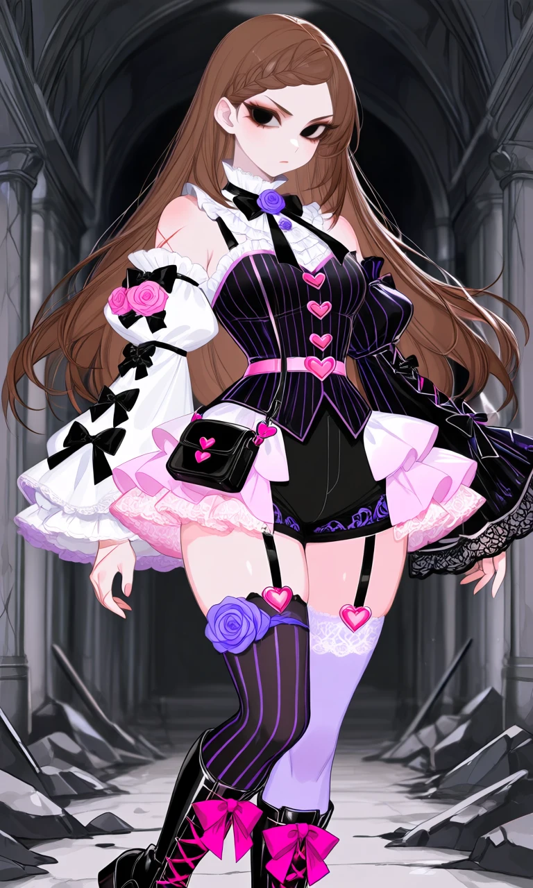
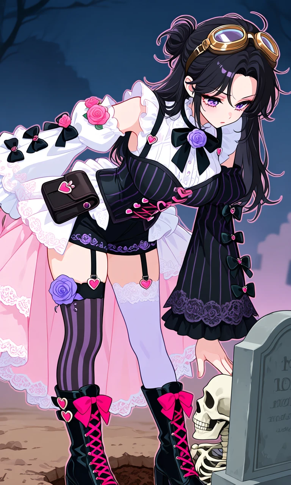

Love at First Bite

Outfit Prompt
She wears an elaborate pink, black, and purple Gothic Lolita vampire-inspired outfit.
A fitted black Victorian corset with delicate purple vertical pinstripes, pink ribbon fastenings, heart-shaped buttons, and a pink heart buckle around her waist. A white lace ruffled neckline decorated with a black bow and purple rose brooch.
Asymmetrical detached sleeves exposing her shoulders. One sleeve is a voluminous white puffed sleeve decorated with black bows and pink roses, ending in a frilly white cuff. The opposite sleeve is a long black sleeve with purple pinstripes, decorative black bows, and a dramatic flared lace cuff.
Short fitted black Lolita shorts with purple embroidery, surrounded by a short, flared layer of white and pale pink lace ruffles around her hips. A small black leather pouch with pink heart decorations hangs from her waist.
Mismatched thigh-high stockings: one black with purple vertical stripes, the other pale lavender with delicate lace trim. Decorative black garter straps with pink heart buckles, and a beautiful purple rose garter.
Black Gothic lace-up boots with bright pink crisscrossing ribbons, chunky heels, and oversized decorative bows.
Outfit Examples



